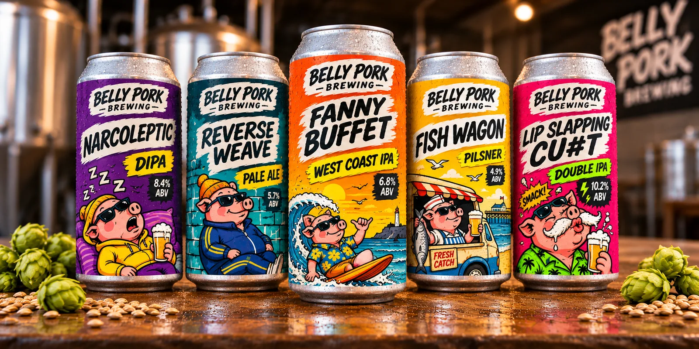
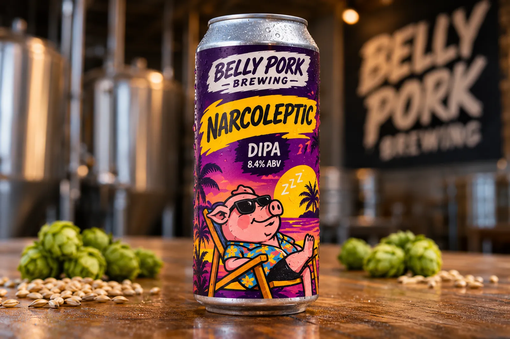
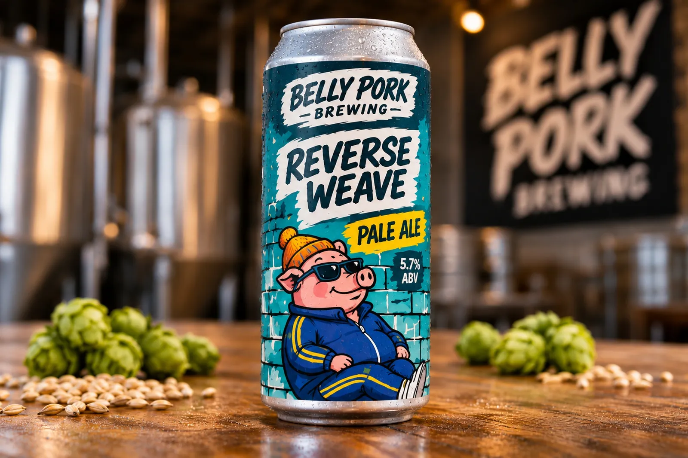
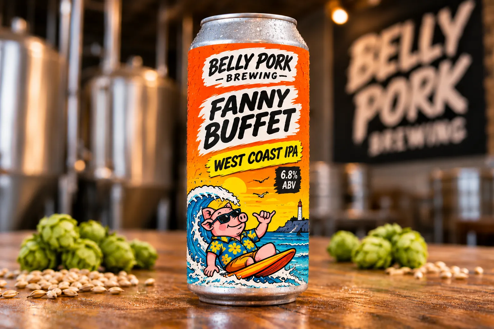
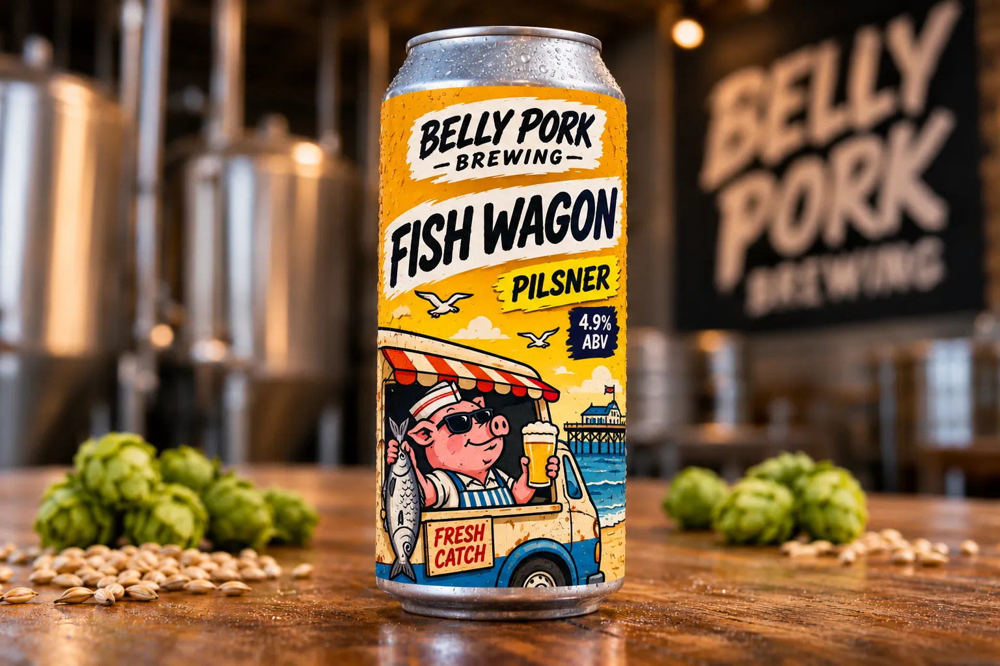
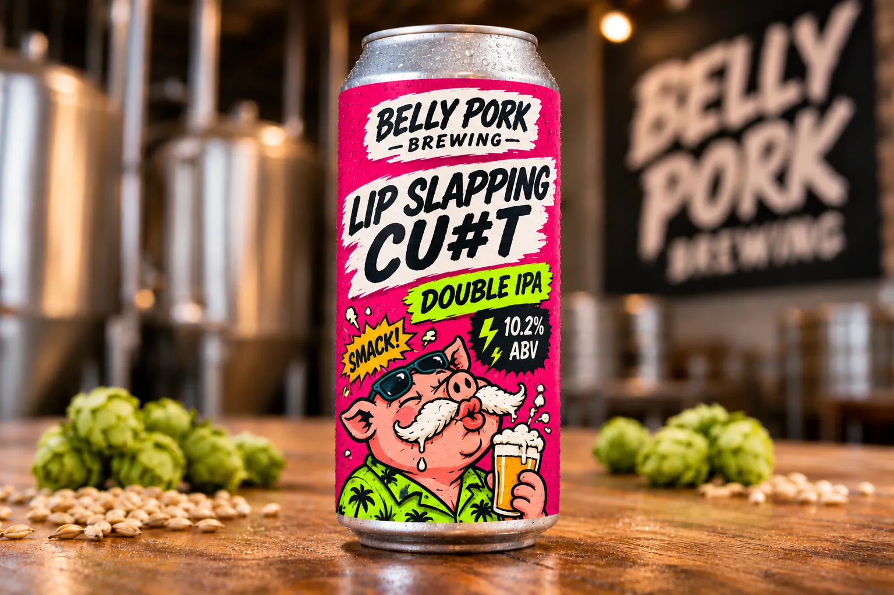
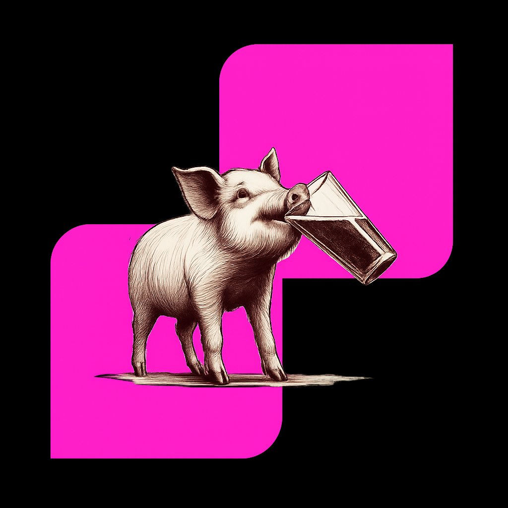

Craft Beer · Est. 2024 · Suffolk
Independent craft beer born from passion, an obsession with vapes, and Graham's impeccable taste.

// On The Tap List
// The Range

DIPA
Where it all started. Hazy, heavy, and guaranteed to put you to sleep. Don't make plans after this one.
Tasting Notes

Pale Ale
Don't conform to the vertical — think horizontal. Smooth, easy-drinking, and does things its own way.
Tasting Notes

West Coast
Don't choose one — take the lot. A West Coast IPA loaded with everything, for people who don't believe in moderation.
Tasting Notes

Pilsner
Crisp, clean and gone before the chips go cold. Graham calls it the best pilsner in Suffolk. Browny called it "a bit fizzy."
Tasting Notes

Double IPA
Ten percent of big, sticky and dangerously smooth. It leaves your lips tingling and your legs weak. Browny managed half and needed a lie down.
Tasting Notes
// Who We Are
Three lads from Suffolk. Never really grew up — just swapped messing about for making beer.
We brew the kind of beer we actually want to drink. No nonsense, no pretending.
If it's not right, it doesn't leave the brewery. Graham's the final say.

"If Graham
doesn't like it,
it doesn't ship."
— The Belly Pork Quality Charter, Article 1
// Meet The Brewer
Graham is the reason Belly Pork Brewing exists — our brewer, our quality control, and the only opinion that matters.
"If it's not good enough for my glass, it's not good enough for yours."
— Graham, Founder & Head of Taste